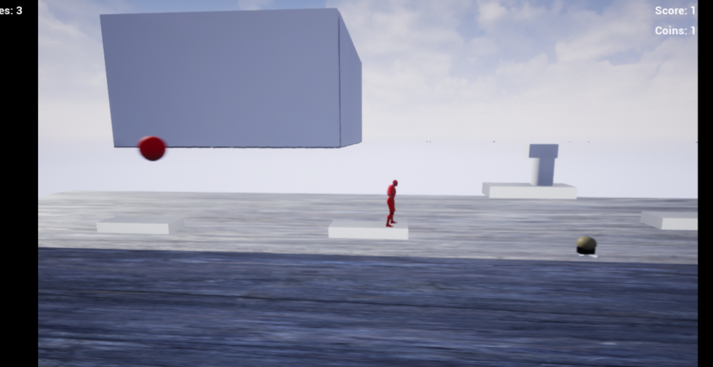
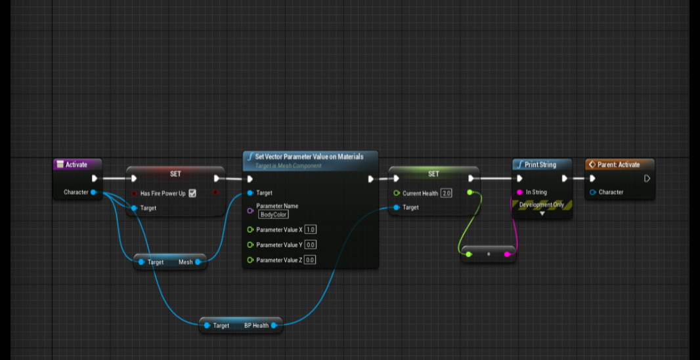
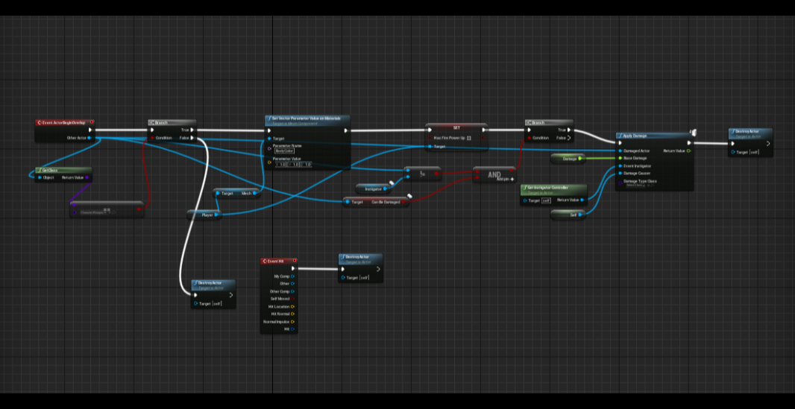

Platformer



This project was the first week of working on a team and we were given a few templates. For this one we chose the platformer template. I was tasked with adding three main mechanics, the first being a health system. The second two were power ups, the first power up worked similar to a mushroom from Mario where the palyer would get one extra hit without dying immediately, the player would turn green in this state. The second one is a "fire" power up that allows the player to not only get a second hit point but they also gain the ability to shoot projectiles.